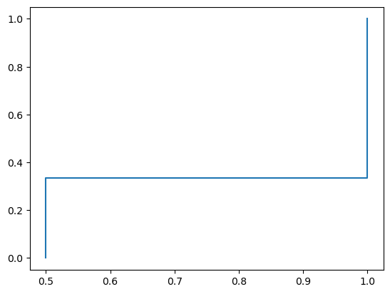
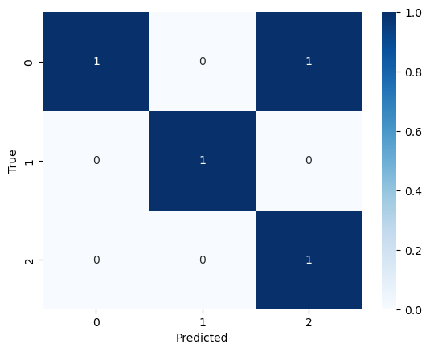

import sklearn.metrics as skm
from fastcore.test import test_eqmetrics
common metrics for binary and multiclass classification
accuracy_score
accuracy_score (y_true:numpy.ndarray, y_pred:numpy.ndarray, normalize=False, sample_weight:Optional[numpy.ndarray]=None)
computes accuracy for binary or multiclass classification
| Type | Default | Details | |
|---|---|---|---|
| y_true | ndarray | true labels | |
| y_pred | ndarray | predicted labels | |
| normalize | bool | False | if weights is not None, normalize by sum of weights |
| sample_weight | Optional | None | weights for each sample |
x = np.array([0, 1, 2, 3])
y = np.array([0, 1, 2, 5])
weight = np.array([1, 1, 1, 0])
test_eq(accuracy_score(x,y, normalize=True, sample_weight = weight), skm.accuracy_score(x,y, normalize=True, sample_weight=weight))confusion_matrix
confusion_matrix (y_true:numpy.ndarray, y_pred:numpy.ndarray, sample_weight:Optional[numpy.ndarray]=None)
compute confusion matrix for multiclass classification; assume all labels are present and range from 0 to n_classes-1; \(C_{ij}\) is the number of samples that have true label \(i\) and predicted label \(j\)
| Type | Default | Details | |
|---|---|---|---|
| y_true | ndarray | true labels | |
| y_pred | ndarray | predicted labels | |
| sample_weight | Optional | None | weights for each sample |
y_true = np.array([0, 1,2,0])
y_pred = np.array([0, 1,0,0])
weight = np.array([1, 2, 3, 4])
test_eq(confusion_matrix(y_true, y_pred, sample_weight=weight), skm.confusion_matrix(y_true, y_pred, sample_weight=weight))precision_recall_fscore
precision_recall_fscore (y_true:numpy.ndarray, y_pred:numpy.ndarray, sample_weight:Optional[numpy.ndarray]=None)
macro average the metrics across classes
| Type | Default | Details | |
|---|---|---|---|
| y_true | ndarray | true labels | |
| y_pred | ndarray | predicted labels | |
| sample_weight | Optional | None | weights for each sample |
precision_score
precision_score (y_true, y_pred, **kwargs)
compute the macro averaged precision
recall_score
recall_score (y_true, y_pred, **kwargs)
compute the macro averaged recall
f1_score
f1_score (y_true, y_pred, **kwargs)
compute the macro averaged f1 score
y_true = np.array([0, 1, 2, 0])
y_pred = np.array([0, 1, 2, 2])
weight = np.array([1, 1, 1, 0]) # ignore the last example
test_eq(precision_score(y_true, y_pred, sample_weight = weight), skm.precision_score(y_true, y_pred, sample_weight=weight, average='macro'))
test_eq(recall_score(y_true, y_pred, sample_weight = weight), skm.recall_score(y_true, y_pred, sample_weight=weight, average='macro'))
test_eq(f1_score(y_true, y_pred, sample_weight = weight), skm.f1_score(y_true, y_pred, sample_weight=weight, average='macro'))log_loss
log_loss (y_true, y_pred, sample_weight=None)
y_true.dim == 1, y_pred.dim == 2, sample_weights.dim == 1
x1 = np.array([0, 1, 1])
x2 = np.array([[0.1, 0.9], [0.9, 0.1], [0.1, 0.9]])
w = np.array([1, 1, 100])
test_eq(log_loss(x1, x2, sample_weight=w), skm.log_loss(x1, x2, sample_weight=w))roc_curve
roc_curve (y_true, y_score, pos_label=None)
inherently binary. pos_label can be any label in y_true. compute the ROC curve for that label. use a different convention for the accumulated counts to sklearn that leads to the same auc score
roc_curve(np.array([0, 1, 1, 0]), np.array([0.3, 0.9, 0.1, 0.8]))(array([0. , 0.5, 1. , 1. ]),
array([0.5, 0.5, 0.5, 1. ]),
array([0.9, 0.8, 0.3, 0.1]))roc_auc_score
roc_auc_score (y_true, y_score)
a1 = np.array([1,0,1,0,1,1,1,1])
a2 = np.random.random(8)
test_eq(roc_auc_score(a1, a2), skm.roc_auc_score(a1, a2))Scorer
Scorer (score_func, **kwargs)
Initialize self. See help(type(self)) for accurate signature.
from sklearn.model_selection import cross_val_score
from sklearn.linear_model import LogisticRegressionX = np.random.default_rng().random((100,10))
y = np.random.default_rng().choice(2,100)
weight = np.arange(100)
clf = LogisticRegression()
scorer = Scorer(accuracy_score)
sk_scorer = skm.make_scorer(accuracy_score)
test_eq(cross_val_score(clf, X, y, scoring=scorer), cross_val_score(clf, X, y, scoring=sk_scorer))RocCurveDisplay
RocCurveDisplay ()
*plot result of roc_curve which returns fpr, tpr, _*
RocCurveDisplay.from_predictions(a1, a2)
ConfusionMatrixDisplay
ConfusionMatrixDisplay ()
plot result of confusion_matrix
ConfusionMatrixDisplay.from_predictions(y_true, y_pred)